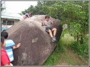
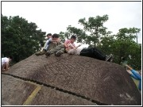
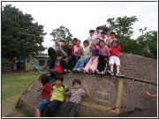
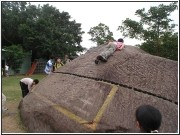
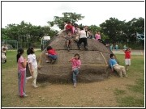
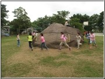

|
溜滑梯
先爬上媽祖石，爬到媽祖石的頂端找比較滑的地方溜下去，在看誰先溜下來。比賽溜的快慢。最快溜下來了人就贏了。
躲貓貓
找一個人當鬼，其他人躲在大石頭後面，數到十後開始抓人，被抓到的就輸了。
蜘蛛人
爬到媽祖石的側邊，抓住比較粗的地方，就可以在媽祖石上爬來爬去，一定要四隻手腳都貼在石頭上。
寵物媽祖石（電腦遊戲）
認養媽祖石，飼養者要定期幫媽祖石洗澡，打蠟，還要餵媽祖石吃東西。把媽祖石照顧好就可以開放小朋友爬媽祖石或是讓大家參觀，賺得的錢就用來養媽祖石。
繞媽祖石跑
大家繞媽祖石跑，不要被鬼抓到。
大白鯊
大家在石頭上，不能被鬼抓到，不然大白鯊會吃掉你喔！
射擊遊戲
用手比槍射擊別人，別人可以躲在石頭後面。
抓蟲蟲
就是上面如果有蟲蟲，我就會用帽子把它抓起來。
日光浴
爬上去大石頭的上面，在上面曬陽光。或是爬上媽祖石，踩著媽祖石中間的裂痕，躺在媽祖石上，這樣可以晒日光浴
快手快腳
看誰先爬上去誰就贏。
剪刀石頭布布布
猜輸的人要爬上爬下五遍。
平衡大考驗
比賽看誰可以只用腳不用手爬上媽祖石。
膽大包天
從石頭的各個角度快速地溜下去。
打碎媽祖石（電腦遊戲）
開始有一些打碎媽祖石的工具，30秒內要打碎媽祖石，如果沒有打碎媽祖石的話，巨蛇就會跑出來。
做點心給媽祖石吃（電腦遊戲）
開始要選材料，選完後開始做，做完後點一下媽祖石，就可以給媽祖石吃了。
王子救公主
先決定王子和公主，公主被綁在媽祖石上，石頭周圍都是壞人，王子要度過壞人的難關才能救到公主。
停在中間
留下來之後停在裂痕裡面。
雲霄飛車
爬到媽祖石上，從另一頭下來，一開始溜會滑滑的，接著會快速地掉下來。
媽祖石改造紅綠燈
只要爬上媽祖石就不能抓地了，只要沒有爬上媽祖石就可以。
|
|
 |
|
溜滑梯 |
|
 |
|
日光浴 |
|
 |
|
停在中間 |
|
 |
|
躲貓貓 |
|
 |
|
快手快腳 |
|
 |
|
繞媽祖石跑 |
|
|